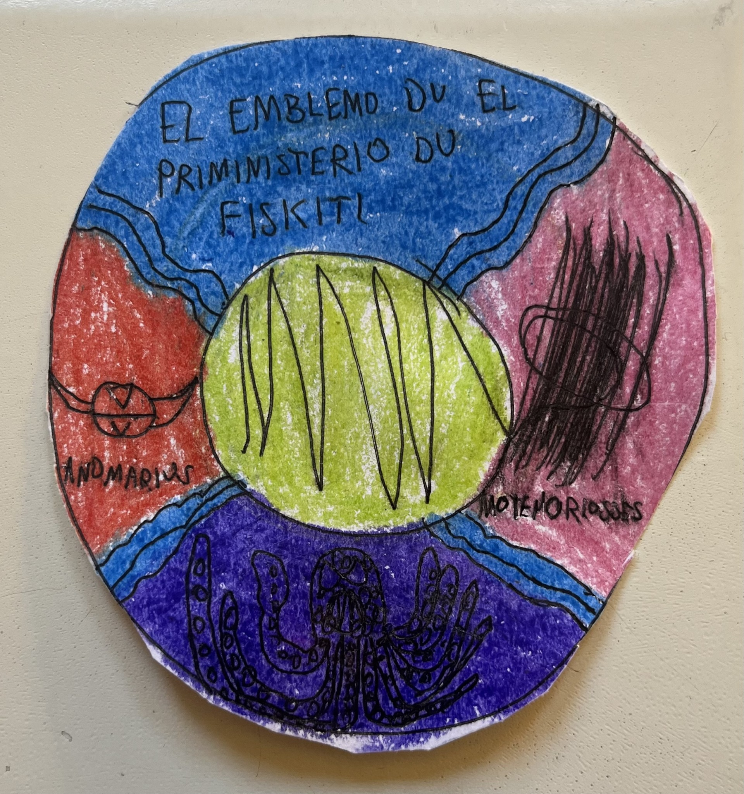
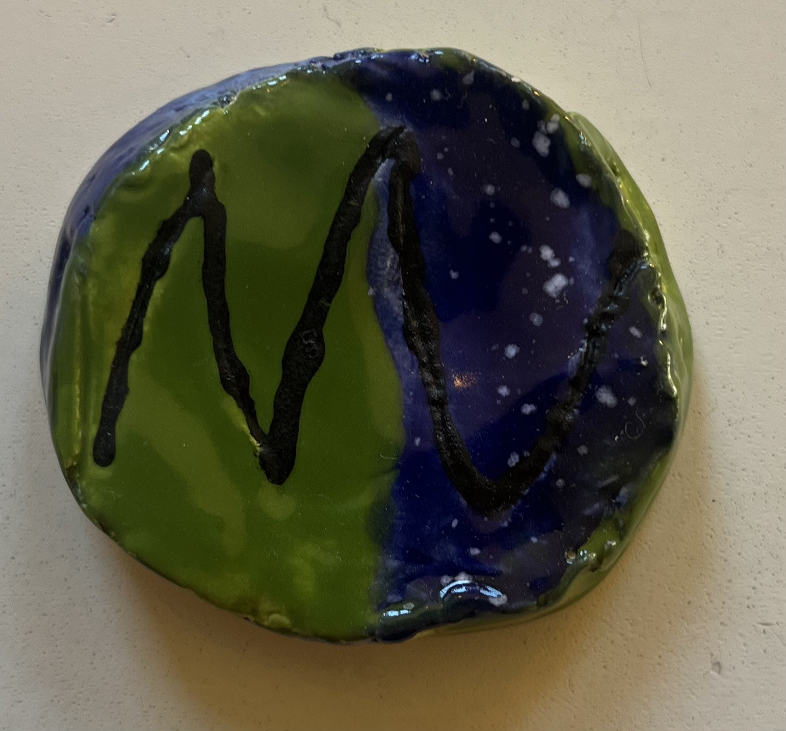
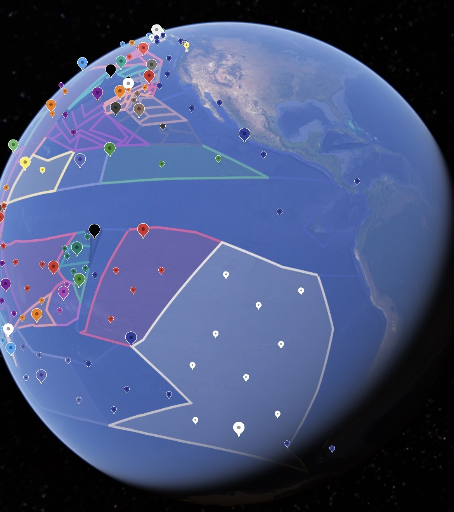
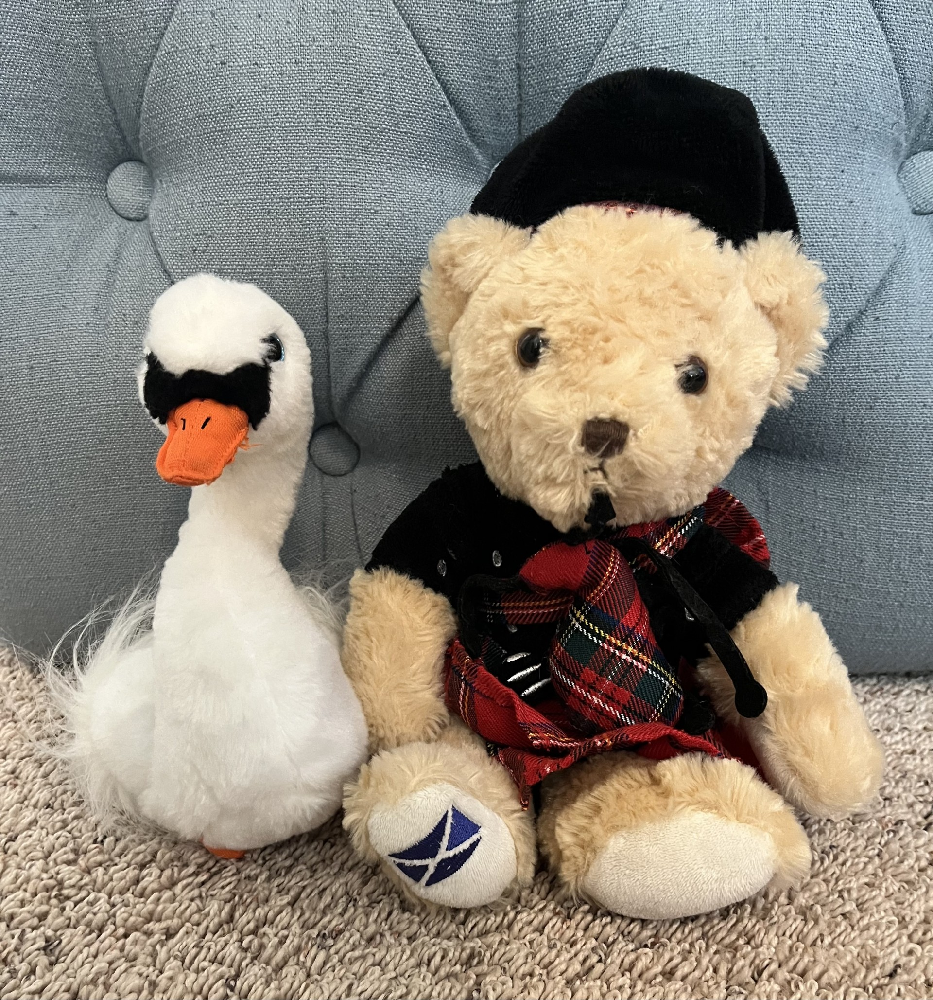

The flag of Fish City, created in 1624 following the independence of Imperial Fish City from the Angorian Empire.

The seal of the Prime Minister of Fish City

The symbol of the Fishish Monarchy
Lorn eiu internetten-officiel deu Olferz Trubel euv Fiskiti
This is an official website of the Tribal Kingdom of Fish City
Getkartof zutene: Engeleise
Current language: English
This page contains pictures of Fishish symbols (such as the Fishish flag and seal of the prime minister) along with pictures of Angus Bagpipes himself.
Eserchubelon getkartof zutel Fisis
The flag of Fish City, created in 1624 following the independence of Imperial Fish City from the Angorian Empire.

The seal of the Prime Minister of Fish City

The symbol of the Fishish Monarchy

A map showing Fish City's location in relation to the rest of
the Allied Pacific Countries.

A portrait of Prime Minister Angus Bagpipes and former Prime Minister
Swan Soloir at Bagpipes's first inauguration.
Lorn eiu internetten-officiel deu Olferz Trubel euv Fiskiti
This is an official website of the Tribal Kingdom of Fish City
Getkartof zutene: Fisis
Current language: Fishish
Ekt tabare galerias de emblemiens Fiisis (petru la fluion Fiisis gele emblemo du Ministre Primile) hasa petra qe galerias de te entor Angus Bagpipes.
I want my current language to be English
La fluion de Fiskiti, nutore e 1624 jasquemorjaan sigvenes du Fiskiti-Emperial deru Emperie de Angohrre.
El emblemo du el Ministre Primile du Fiskiti
El emblemien du el Olferz Fiisis
Ektun globere mijakozre placede en furveron de remando de
Paiseis Conjredaale du Pacifico.
Un galeriat de Ministre Primile Angus Bagpipes ge Ministre Primile
previour Swan Soloir en el inauguratione prime de Bagpipes.